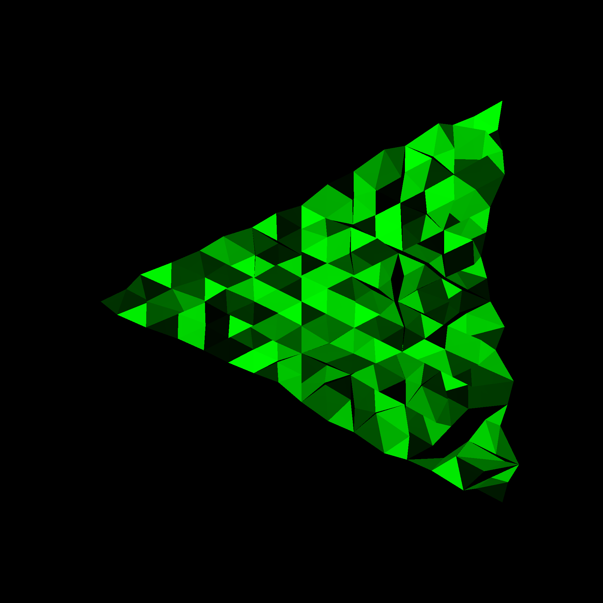

Beginning of the project
The ray tracing projects started for me as a brief class assignment, but then I continued experimenting with ray tracing even after the completion of the assignment. After working on the project in Scala, I attempted to write the code in C using pseudo object orientation using structs and function pointers. I afterwards decided to return to writing it with a procedural paradigm.

Cython to connect C to Python
After figuring out the basics of the ray tracer in C, I discovered the usefulness of Cython in its ability to connect C and Python together. The C code would be a module that could be imported in Python and Python code would run it, but the heavy lifting still happens in C. With this change I gained access to Python's vast collection of libraries, and used one of them, pypng, to turn the result of the ray tracer in png images.
Code on Github: C_rayTracing
